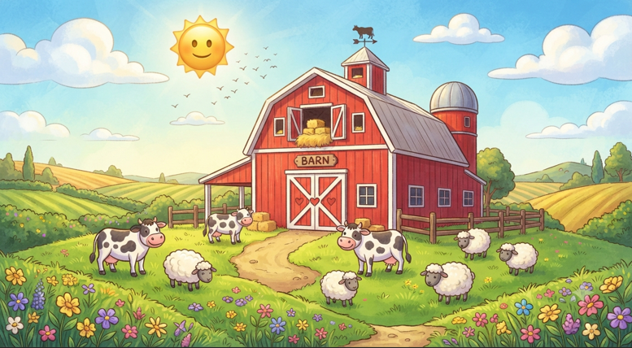

Ek baar ek farm par ek shandaar purana laal barn tha. Uss barn ke andar 4 gaaye (cows), 2 bhed (sheep) aur 1 kisan the. 🚜
Achanak ek din, kisan ne barn ke andar 3 aur janwar aur daal diye! 🐐🐑
Ab sawal yeh hai ki: Total kitne pair (legs) zameen par hain agar kisan bhi apne dono pairo par khada hai aur saare janwar bhi theek se khade hain? 🤔👇